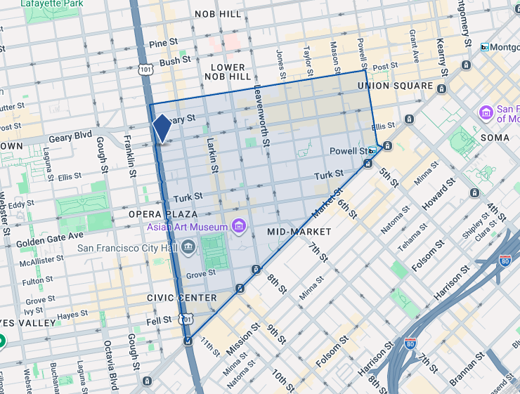

执行摘要
- 核心区位：可便捷到达 Downtown、Hayes Valley、Nob Hill、Japantown、SOMA 及北部多个社区。
- 交通驱动优势：Van Ness BRT 显著提升了走廊的通勤效率、稳定性与安全性。
- 已有住宅先例：100 Van Ness、150 Van Ness 与 Opera Plaza 等项目证明该走廊已被市场验证为成熟住宅区位。
- 机构型需求支撑：医疗、教育与公共机构带来稳定的人流与居住需求。
- 重建逻辑清晰：该地块当前更像一个遗留型汽车用途，而所在走廊越来越适合住宅与混合用途开发。
地块定位
公开资料普遍将 950 Van Ness 识别为原 Mercedes-Benz / 汽车相关用途物业。正因为如此，这块地在今天的 Van Ness 走廊上更像是一个历史遗留的低强度汽车用途，而不是最优的当前土地利用方式。与其现状相比，住宅或住宅导向的混合用途显然更契合周边发展趋势。
现状特征
- 汽车 / 4S 店 / 车辆相关用途属性明显
- 位于重要城市走廊上的低强度遗留用途
- 从今日市场逻辑看，更适合转向住宅或混合用途
最优叙事方向
- 以交通升级为基础的住宅重建机会
- 叠加医疗、文化与日常配套的便利性
- 不是“等待未来兑现”的区位，而是已被市场接受的城市居住地段
核心卖点：这不是旧金山边缘位置，而是旧金山中心区的重要大道沿线，交通投资与社区配套已经到位。
需要说明的是，地块层面的 zoning、尺寸、建筑指标等，仍应在正式投资材料中结合 OM 与旧金山规划资料进一步核实。
为什么这里适合做住宅
1. 中心性强
Van Ness 是旧金山南北向的重要城市主轴之一。以 950 Van Ness 为起点，居民能够较方便地到达 Downtown、Civic Center、Hayes Valley、Polk Street、Nob Hill 与 Japantown。对城市型住宅产品来说，这种多节点可达性本身就是最重要的价值之一。
2. 公共交通改善明显
Van Ness 已不再只是宽阔的车行道路。根据 SFMTA，Van Ness BRT 通过中央专用公交车道改善了运行效率与可靠性，公交出行最快可提升 36%，可靠性提升 45%，伤害型交通事故下降 50%。对于住宅产品而言，这意味着更低的汽车依赖与更高的日常可用性。
- 直接接入 Van Ness BRT / Rapid Network 主干线路
- 可衔接 Market Street 以及更广泛的区域就业节点
- 步行环境与道路安全性均有改善
- 更支持高密度住宅，而不是传统汽车导向前场展示用途
3. 机构型需求稳定
走廊沿线集中了公共机构、医疗机构与教育设施，为区域带来持续的日间与夜间活动强度。这不是纯粹依赖“未来想象”的开发逻辑，而是已经有现实需求基础支撑的住宅区位。
人口与住户特征
该物业位于 San Francisco County 的 Census Tract 122.02。该区域呈现出成熟、城市化、租赁导向明显的人口特征；虽然家庭收入低于旧金山全市平均水平，但仍拥有相当比例的高学历人口与高密度公寓存量，这在旧金山中心区域是常见特征。
| 指标 | 周边普查区 | 旧金山全市 | 解读 |
|---|---|---|---|
| 总人口 | 3,017 | 836,321 | 典型高密度城市社区环境 |
| 年龄中位数 | 46.2 | 39.7 | 居民年龄结构较全市更成熟 |
| 家庭收入中位数 | $54,650 | $141,446 | 周边更偏向混合收入 / 劳动力型居住群体 |
| 总住房单元 | 1,702 | 411,542 | 多户住宅环境明显 |
| 自有住房 | 178 | 139,610 | 区域自住比例较低 |
| 租赁住房 | 1,310 | 223,040 | 对租赁型产品更友好 |
| 25 岁以上本科人数 | 630 | 234,704 | 具备一定教育水平基础 |
| 25 岁以上本科及以上 | 892 | 402,351 | 本地仍有较高学历住户支撑 |
虽然该普查区并非旧金山收入最高的地段，但这并不削弱其住宅重建逻辑。相反，它说明这条走廊本身已经承载了高密度住宅生活。若产品设计与定位得当，新项目完全有机会凭借区位、交通、医疗便利性与更新的产品品质，吸引更强的租户或买家客群。
Civic Center / Tenderloin 多户住宅子市场

CoStar 的子市场报告证明，950 Van Ness 的价值并不只是“附近配套不错”。更重要的是，其所在的多户住宅子市场本身正在恢复并改善。进入 2026 年，该子市场空置率收窄、租金上涨，且近期没有新增交付，这让现有及未来项目拥有更好的租金议价空间。
| 指标 | 子市场 | 旧金山整体 | 对 950 Van Ness 的意义 |
|---|---|---|---|
| 存量单元数 | 11,184 | 190,858 | 说明这里是成熟住宅子市场，而非新兴片区 |
| 空置率 | 5.5% | 4.3% | 仍高于全市，但趋势改善明显 |
| 空置单元 | 610 | 8.1K | 去化压力存在，但可租库存已往积极方向变化 |
| 平均要价租金 / 单元 | $2,591 | $3,435 | 相对全市更具可负担性，支撑价格敏感型需求 |
| 有效租金 / 单元 | $2,575 | $3,414 | 有效租金与挂牌租金差距不大，说明让利有限 |
| 租金优惠率 | 0.6% | 0.6% | 与全市持平 |
| 在建单元 | 0 | 2,939 | 子市场内部几乎没有直接新增竞争供给 |
| 过去 12 个月交付 | 0 | 1,584 | 未来项目受新供给冲击较小 |
| 销售价格 / 单元 | $370K | $537K | 比全市更低的进入成本可能更吸引价值型买家 |
| 市场资本化率 | 4.8% | 4.5% | 收益率略高于全市平均 |
| 过去 12 个月成交额 | $33.3M | $2.7B | 流动性偏薄，但并非没有交易 |
| 过去 12 个月成交宗数 | 8 | 425 | 深度有限，但市场未冻结 |
CoStar 还指出，该子市场约有 11,000 个市场化住宅单元及约 4,000 个保障性住宅单元；过去一年没有新增交付，也没有新的开工。这个“供给暂停”非常关键——它让现有与未来项目在出租时，不必直接面对一波集中涌入的新产品竞争。
旧金山整体多户住宅市场

从全市层面看，950 Van Ness 所在位置的故事会更有说服力。CoStar 显示，旧金山多户住宅市场在 2026 年初保持强劲：空置率已降至 4.3%，平均租金约为每单位 3,435 美元，年度租金增长速度在美国主要城市中处于较快水平，而供给仍显不足。
| 指标 | 旧金山 | 全美 | 意义 |
|---|---|---|---|
| 空置率 | 4.3% | 8.6% | 旧金山明显比全美平均更紧 |
| 平均挂牌租金 / 单元 | $3,435 | $1,770 | 全市租金水平显著高于全国 |
| 有效租金 / 单元 | $3,414 | $1,749 | 折价有限，价格承接能力较强 |
| 租金优惠率 | 0.6% | 1.2% | 优惠水平低于全国平均 |
| 销售价格 / 单元 | $537K | $233K | 投资者仍愿意为旧金山多户住宅支付溢价 |
| 资本化率 | 4.5% | 6.1% | 较低 cap rate 反映更强的长期预期 |
| 家庭收入中位数 | $154,217 | $84,512 | 全市收入基础足以支撑高租金 |
| 过去 12 个月吸纳量 | 3,045 | 395,305 | 即便成本高，需求仍在持续 |
| 在建单元 | 2,939 | 551,407 | 有建设活动，但相对历史水平仍偏低 |
CoStar 的城市级叙事中，有几条对 950 Van Ness 特别有利：首先，市中心与核心区住宅需求正在恢复；其次，返岗办公与 AI / 科技相关招聘，正在把更高收入的租户重新带回旧金山；同时，高建造成本、复杂审批流程与融资收紧又抑制了新供给。换句话说，需求恢复而供给受限，这正是最有利于优质住宅重建项目的市场背景。
对 950 Van Ness 来说，结论很直接：它不仅位于一个正在改善的子市场之中，更位于一个在空置率、租金、优惠率与定价能力上都优于全国平均水平的大都会市场之中。
哪些人会想住在这里？
- 希望住在城市核心、但不想高度依赖汽车的年轻专业人士
- 受益于 CPMC 及周边医疗办公资源的医疗从业人员
- 与附近教育机构有关联的研究生、教师与教育相关群体
- 希望缩小居住面积、但保留便利与文化生活的成熟住户 / 空巢家庭
- 看重旧金山核心地址、交通与生活便利的本地及国际租客
- 偏好餐饮、文化、购物与多社区切换便利性的城市生活型住户
- 希望以低于旧金山整体均价的租金，获取中心区位的性价比型租客
教育、医疗、宗教与日常生活配套
学校 / 教育设施
- Sacred Heart Cathedral Preparatory School
- Tenderloin Community School
- Redding Elementary School
- DeMarillac Academy
- Stuart Hall High School
- Academy of Art University 周边项目
医疗资源
- CPMC Van Ness Campus — 274 床位医院
- 周边医疗办公资源密集
- 对医疗从业者、家属型租客及重视便利性的住户有吸引力
宗教场所
- Saint Mark’s Lutheran Church
- First Unitarian Universalist Church
- Hamilton Square Baptist Church
- Trinity Episcopal Church
- Saint Gregory of Nyssa Episcopal Church
- Al Tawheed Mosque
零售 / 超市 / 日常消费
- Whole Foods Market
- Trader Joe’s
- Nijiya Market
- Sutter Fine Foods
- Golden Farmer Market
- Opera Plaza、Japantown / Japan Center、Polk Street
周边住宅产品基础
支持住宅重建最有力的一点其实非常简单：这条走廊已经被市场证明是可居住、可接受、可持续的住宅地址。
- 100 Van Ness 是重要的办公改公寓成功案例。
- 150 Van Ness 进一步强化了该走廊作为现代多户住宅地址的市场认知。
- Opera Plaza 以及周边多户住宅项目，说明这里并不是从零开始建立住宅氛围。
因此，买家并不是在“创造”一个新的住宅节点，而是在一个已经存在住宅基础的区位中，把一个过时的土地用途，替换为更符合当前市场逻辑的产品。
走廊发展故事：从汽车走廊到城市住宅大道
Van Ness 的魅力在于，它并不是一个普通街区，而是一条被公共投资与城市政策持续推动升级的核心走廊。它曾经在部分路段较为汽车导向，但如今正逐步变成一个更安全、更高效、更适合住宅与混合用途开发的城市大道。
- 旧金山总体规划将 Van Ness 定位为重要混合用途与交通走廊
- BRT 投资清晰体现了公共部门对走廊长期表现的支持
- 周边住宅与改造项目证明私人资本已认可住宅方向
- 传统汽车用途在如此核心的走廊上，显得越来越低效
给买家的核心信息
风险与注意点
- 周边普查区收入水平低于全市均值，因此项目叙事应更多强调走廊升级、中心可达性与产品差异化，而不是仅依赖当前周边收入水平。
- Civic Center / Tenderloin 一带在市场认知层面仍可能存在一定顾虑，因此需要用医疗、文化、交通改善与核心走廊定位来对冲这种印象。
- CoStar 数据显示子市场正在改善，但其空置率与租金水平仍落后于全市平均，因此财务假设需要保持审慎。
- 子市场成交量相对有限，因此估值支撑与买方深度可能不如更强势的机构型子市场。
- 在正式投资材料中，仍需结合规划资料与 OM 进一步核实地块、容积、限高、开发强度与单位数假设。
方法与数据来源
本互动网页基于最终版研究文档整理，并重新设计为更便于阅读、演示与分享的网页格式。
- 客户提供的 950 Van Ness Ave OM（Offering Memorandum）
- CoStar：Civic Center / Tenderloin 多户住宅子市场报告
- CoStar：San Francisco 多户住宅市场报告
- 美国人口普查局 2023 ACS 5-Year Profile 数据
- San Francisco General Plan：Van Ness Avenue
- SFMTA：Van Ness Bus Rapid Transit 项目资料
- Sutter Health / CPMC Van Ness Campus 公共资料
- OpenStreetMap / Overpass 周边配套检索
- 100 Van Ness、150 Van Ness、Opera Plaza、Polk Street、Japantown / Japan Center 等公开项目与社区资料
设计说明：本页面采用标签式分区展示，便于与客户一起逐段浏览，也更容易在未来继续升级为更完整的线上展示页面。